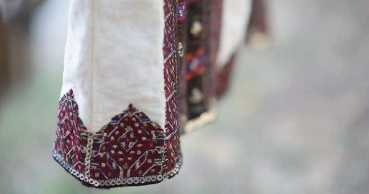

Произход и история на шевиците

Българската шевица – една уникална част от родния фолклор, отразяваща дълбоките корени и идентичност на българския народ. Това народно изкуство под формата на бродерия датира още от времето на прабългари и славяни, предавайки през поколенията послания за здраве и благоденствие.
Българската традиционна везба е изключително интересно и разнообразно творчество. Във всеки бод, всяка фигура и всеки цвят е закодиран символ, разказващ историята на живота, вярата и традициите на българите.
Произход на шевиците
Шевиците се везбени орнаменти, датиращи от дълбока древност. За техен първообраз по родните земи се считат татуировките. В миналото шевиците не са възприемани само като украса, а като послания, тъй като в тях е закодирана важна символика и значение. Основно служели за представяне на семейните и родовите отношение на всеки човек, неговата връзка с природата и заобикалящата го среда.
Българските шевици имат изключително богата история. Развиват се успоредно с развитието на славянската и прабългарската култура. С напредването на годините и обединяването на двата народа, се наблюдава преплитане във везбените орнаменти, а в допълнение те се изменят и под влиянието на други различни култури и исторически епохи. В резултат на това шевиците са изключително разнообразни и богати както на форми и мотиви, така и на цветове.
Цветове
Всеки елемент, включително цветовете, играе съществена роля във фолклорните везбени орнаменти. Всеки цвят и нюанс в шевицата се свързва с различни народни вярвания и предания. В различните фолклорни области на България съществуват различни цветови комбинации, но независимо от това техните послания остават сходни.
Основната палитра включва червено, зелено, бяло, жълто и синьо, вкл. тъмно синьо.